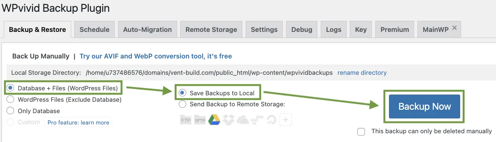
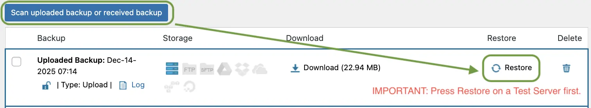
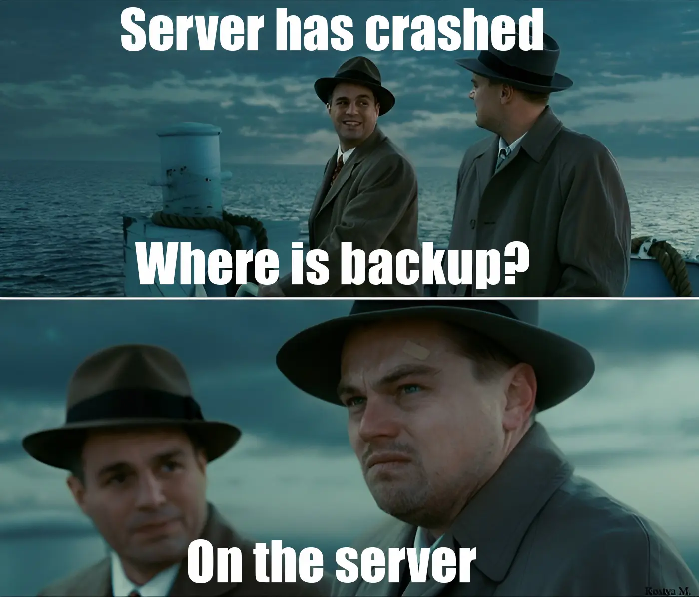
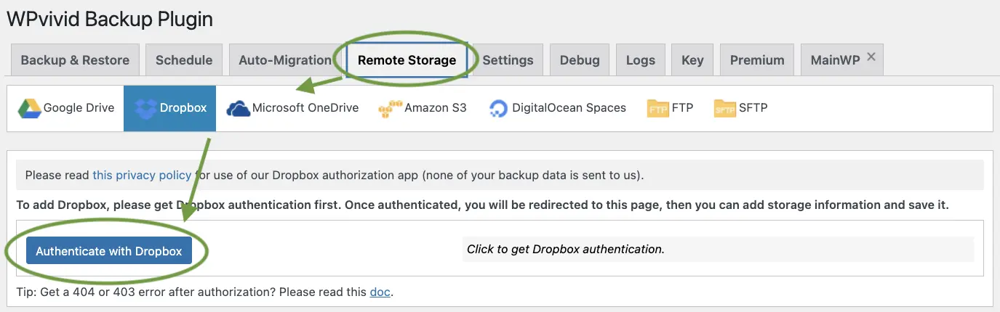
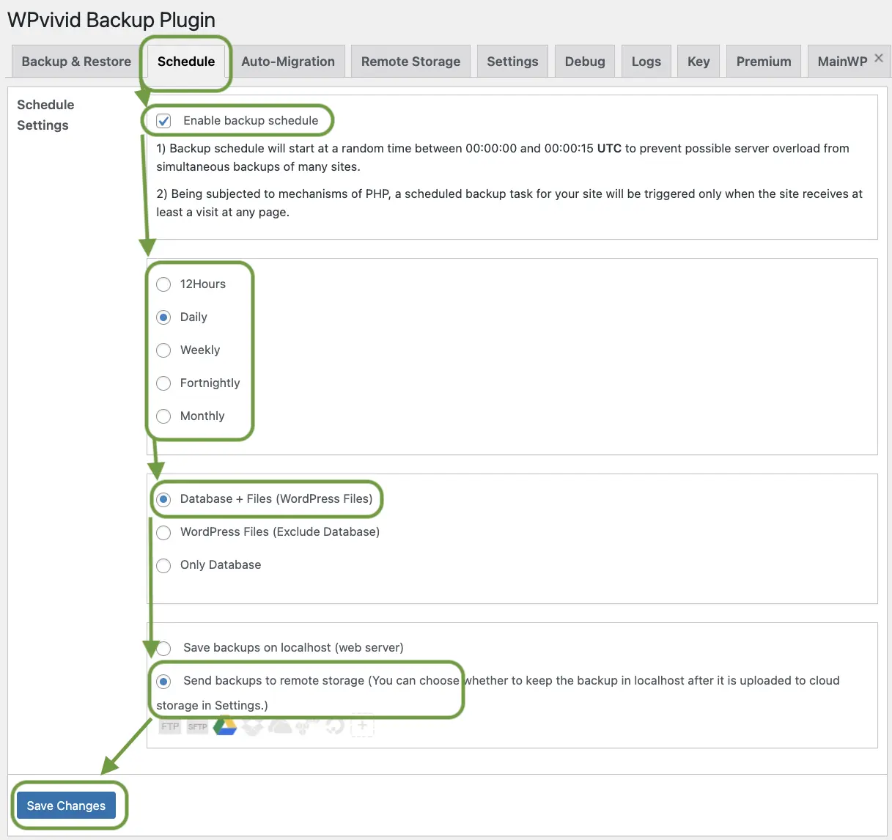
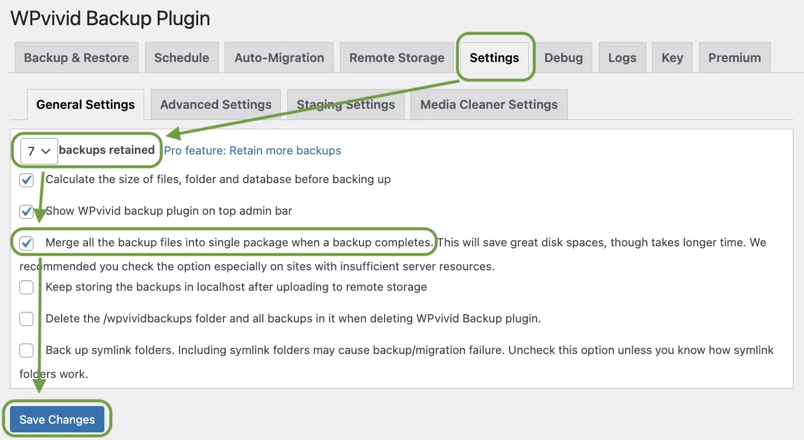

Your WordPress site will fail. Be ready.
Published on December 14, 2025
How to stop worrying about your WordPress site failing and start implementing new features.
Website crashes are normal
Updates fail. Plugins conflict. Servers go down. Themes break layouts. Hackers exploit weak spots. You do not control when this happens. You control how fast you recover. Most site owners panic. They search logs. They contact hosting. They wait. Hours pass. Sometimes days. Without backups, recovery becomes guesswork. A backup removes fear. It turns a crash into a routine task. Restore. Check. Move on.
A WordPress Backup plugin is the solution
While there are many backup plugins available, not all are created equal. Some are lightweight and reliable, while others can slow down your site or cause conflicts. Choosing the right plugin is crucial for effective backup management and peace of mind.
I've tried all of them: UpdraftPlus, Backuply, Jetpack, BackWPup, WPvivid, Duplicator, All-in-One WP Migration. And after 20+ website restorations, I can confidently say that WPvivid is the best option for most users. It strikes the perfect balance between comprehensive protection and ease of use, without the complexity that makes you need a computer science degree to configure it properly.
What WPvivid Can Do For You
- Full website backups.
- Database-only backups.
- Files-only backups.
- Manual backups on demand.
- Automatic scheduled backups.
- One click restore.
- Website migration.
- Staging site creation.
- Remote storage support (Google Drive, Dropbox, Microsoft OneDrive, Amazon S3, FTP, SFTP).
- Backup splitting for large sites.
- Incremental backups in Pro version.
Your First Backup with WPvivid
Despite all of WPvivid's capabilities, you need to verify that it works correctly for YOUR specific setup. Every website is unique — different themes, plugins, hosting environments, and configurations. Backups mean nothing if restore fails. Never trust blindly — test once, then relax.
- Install and activate WPvivid plugin.
- Open WPvivid Backup in WordPress, tab "Backup & Restore". 
- Choose "Database + Files".
- Choose "Save to Local".
- Click "Backup Now".
- Wait for the backup to complete.
- Reload the page, click the button "Scan uploaded backup or received backup", then click "Download".
Congratulations! You have successfully created your first backup. Now it's time to test the restore process.
- Create a blank test WordPress site.
- Install and activate WPvivid plugin on a Test site.
- In the test site, open WPvivid, tab "Backup & Restore".
- Scroll down below the "Backup Now" button to find the "Upload" section, then click 'Upload'" and select the backup file from your local machine. Wait for the message "The upload has completed." - click "OK".
- Now click the "Backups" button (located next to the 'Upload' button).
- There you should see the uploaded backup and click "Restore" and then again "Restore" and click "OK". 
- Don't close or switch to other tabs during the restore process. When finished you will get message "Restore completed successfully." - click "OK".
Perfect! You just successfully completed a full backup and restore test. Reload the page, go to different pages and sections of your website to confirm everything is working as expected. This confirms that your backups are not only created but also restorable.
This entire test process takes 5-60 minutes (depending on the size of your site) and is worth every second. I test my backups every couple of months, and there have been times, when:
- File corrupted during transfer.
- PHP timeout during restore.
- Incompatible plugin files.
- Invalid backup file format.
- and so much more things that can go wrong...
That's why for every website I have / make - I create a test website to verify the backup works. For example:
- Bubacatcity.com has a copy on a test server
- Vent Build website has a copy on a test server
- and you can be sure, that all other websites as well.
This practice gives me peace of mind and ensures that my clients' websites are always protected and recoverable.
If this backup and restore process using WPvivid worked out well for your website - I can share with you my settings and best practices for even smoother and more reliable backups.
I hope you now understand the importance of having your backups not in the same place as your website. To do this - go to tab "Remote Storage" - click on the Cloud service you like the most and then "Authenticate" (log in to your account). After that give it descriptive name, so later you'll know where to find your backups.
Then go to tab "Schedule", tick "Enable backup schedule", choose how often to do backups (e.g., daily or weekly), choose "Database + Files" and "Send backups to remote storage" (in my case Google Drive icon is active, since I authenticated it in "Remote Storage" tab before). And most importantly click "Save".
One last step is to go to tab "Settings" -> "General settings" and choose the maximum allowed amount of backups retained = 7. Then I recommend to tick "Merge all the backup files into single" and click "Save". All the rest settings are not that important.
Summary
Three years ago, I lost two weeks of work because I trusted backups I never tested. The panic, the scrambling, the realization that my "backup solution" was just an empty promise—I wouldn't wish that on anyone.
That's why I'm so insistent about testing. That's why I have test websites for every client site I manage. That's why I check my backup logs monthly and run quarterly restore tests.
Not because I'm paranoid. Because I learned the hard way that hope is not a backup strategy.
You just invested an hour setting this up properly. Testing. Configuring. Connecting remote storage. That hour is worth years of peace of mind.
I've had servers crash. Hard drives fail. Hosting accounts suspended due to billing errors. Security breaches that required immediate rollback. Plugin updates that broke entire sites.
Every single time, I restored from backup and was back online within 20 minutes.
My clients never knew there was a problem. My visitors never saw downtime. I never lost sleep or spent hours on emergency support calls.
That's what you just set up for yourself.
The next time something breaks — and something will break — you'll remember this article. You'll go to WPvivid. You'll click restore. And 15 minutes later, you'll be back to work.
Welcome to the small group of website owners who actually sleep well at night.
If You Remember Nothing Else From This Article, Remember This: Every update — every single one — should happen on a test environment first. Not sometimes. Not for "small" updates. Every. Single. Time.
My Go-To Web Arsenal

Bubacat card game website

Vent Build construction company site

Nginx web server set up